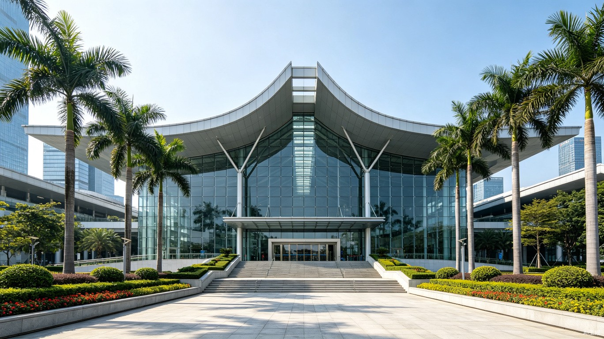
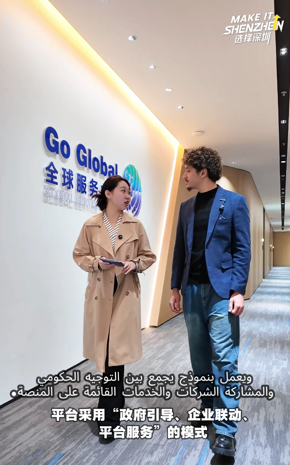
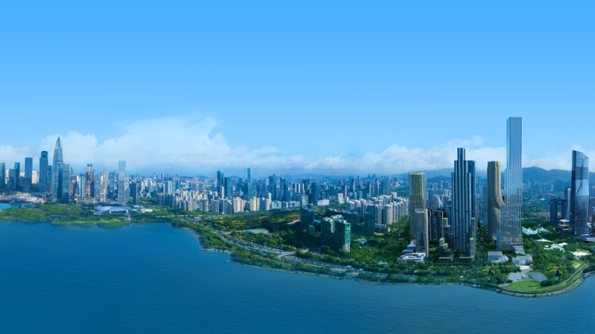

APEC 2026: Your Delegate Briefing
This is not your typical international conference. APEC is where the leaders of 21 Pacific Rim economies — from the United States to Indonesia, from Japan to Peru — gather annually to shape the economic rules that govern half of global trade. In 2026, for the third time in APEC’s history, China hosts. And the choice of Shenzhen is itself a statement.
What Is APEC, Really?
Not a textbook definition — a plain-language briefing.
APEC was founded in 1989 in Canberra, Australia, as an informal response to the growing economic interdependence of the Asia-Pacific. Unlike the EU or WTO, APEC is not a treaty organization — it operates by consensus and voluntary commitments. This means its declarations are not legally binding, but they carry enormous moral and diplomatic weight. When APEC leaders agree on something, markets move.
The annual cycle runs like this: Senior Officials’ Meetings throughout the year set the agenda and draft joint statements. Ministerial meetings and the APEC Business Advisory Council provide input from government ministers and the private sector. Then comes the CEO Summit, where top business executives meet directly with leaders. And finally, the Economic Leaders’ Meeting — the summit itself — where heads of state and government gather for bilateral meetings, the Leaders’ Retreat, and the iconic family photo.
What does APEC actually accomplish? Past summits have produced outcomes that reshape trade policy across the Pacific. The 1994 Bogor Goals committed APEC economies to free and open trade by 2010 (developed) and 2020 (developing). The 2001 Shanghai summit coincided with China’s WTO accession — a watershed moment for global trade. More recently, APEC has driven cooperation on digital trade standards, supply chain resilience, and clean energy transition. While APEC declarations are non-binding, they set the agenda for subsequent WTO negotiations and regional trade agreements. When leaders agree on language around “inclusive growth” or “digital economy” at APEC, those phrases begin appearing in national policy documents within months.
Why Shenzhen Matters for APEC
The city was chosen for a reason — and that reason is the story of APEC itself.
Shenzhen embodies APEC’s core values: open markets, innovation, and economic cooperation. The city exists because of the kind of economic openness that APEC champions. In 1980, Shenzhen was designated China’s first Special Economic Zone — a laboratory for market reforms that proved so successful it was replicated across China.
The city that Shenzhen became — home to Tencent, Huawei, DJI, BYD, and thousands of other tech companies — demonstrates the economic transformation that APEC aims to facilitate across all its member economies. China’s choice of Shenzhen as host sends a clear signal: the 2026 summit will emphasize digital economy, innovation, and sustainable growth.
In four decades, Shenzhen went from a fishing village of 30,000 people to a metropolis of 17 million with a GDP larger than many APEC member economies. It is, in microcosm, what APEC aspires to achieve at the macro level.
The Greater Bay Area — the integrated metro region of Shenzhen, Hong Kong, Macau, Guangzhou, and six other cities — has a combined population of 86 million and a GDP larger than Canada’s or South Korea’s. APEC 2026 in Shenzhen is implicitly about showcasing this economic mega-region to delegates who may not fully grasp its scale. When the 21 Pacific Rim leaders gather here, they’re not just meeting in a city — they’re meeting in the engine room of the world’s most ambitious urban integration project.

Shenzhen Convention and Exhibition Center, Futian District — primary venue for APEC 2026

Nanshan service centre — supporting APEC delegates with multilingual assistance.
The 21 Member Economies
Organized by region. China, the host economy, is highlighted.
Host Economy
The Program
A clean look at the APEC annual cycle — from preparatory meetings to the summit and its outcome.
Protocol for Delegates
Practical, not preachy. What you need to know, organized by when you need to know it.
What to Do Between Sessions
A curated shortlist of places near the venue. All verified by past delegates as worth the trip.

APEC summit events bring together leaders from 21 Pacific Rim economies.
Lianhuashan Park
5 min walkPanoramic city views from the hilltop. Popular with delegates during past summits — the walk up is short and the payoff is a 360-degree view of Shenzhen’s skyline.
Huaqiangbei Electronics Market
10 min taxiThe world’s largest electronics market. Even if you’re not buying anything, it’s a spectacle — entire buildings filled with component shops, prototype workshops, and gadget stalls.
COCO Park
5 min walkFutian’s dining and nightlife district. International restaurants open late. The go-to spot for an informal dinner or drinks after a long day of sessions.
Sea World, Shekou
20 min taxiShenzhen’s waterfront cultural district with a Maki-designed arts center, international restaurants, and harbor views. A longer trip, but worth it for the atmosphere.
Continue Exploring
Now that you understand the summit, explore the city that will host it — from the convention center neighborhood to Shenzhen’s unexpected green side. Or if you’re ready to sort out logistics, the planning guide covers everything from visas to WeChat Pay.